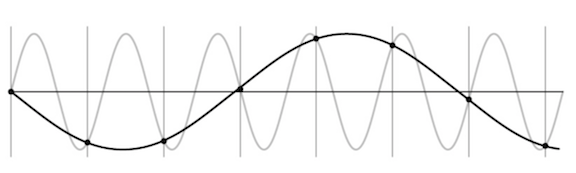
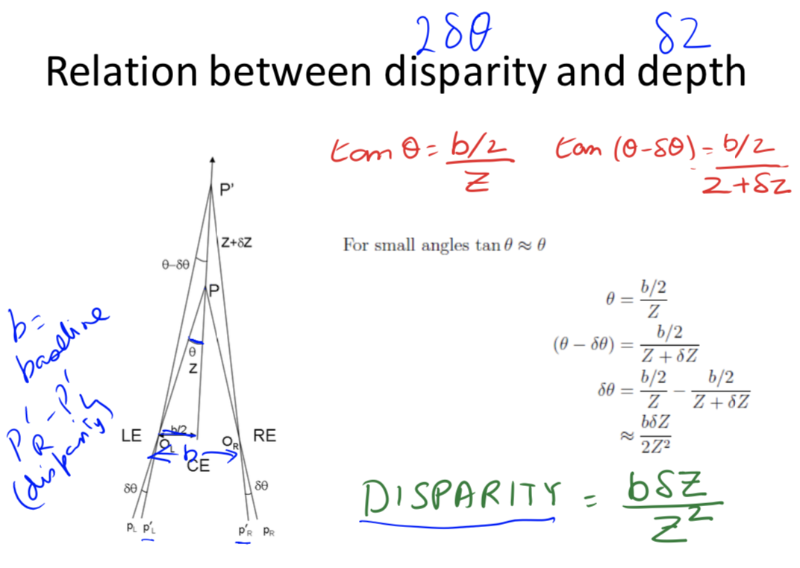

5.3. computer vision¶
5.3.1. what’s in an image?¶
vision doesn’t exist in isolation - movement
three R’s: recognition, reconstruction, reorganization
5.3.1.1. fundamentals of image formation¶
5.3.1.1.1. projections¶
image I(x,y) projects scene(X, Y, Z)
lower case for image, upper case for scene

f is a fixed dist. not a function
box with pinhole=center of projection, which lets light go through
Z axis points out of box, X and Y aligned w/ image plane (x, y)
perspective projection - maps 3d points to 2d points through holes

perspective projection works for spherical imaging surface - what’s important is 1-1 mapping between rays and pixels
natural measure of image size is visual angle
orthographic projection - appproximation to perspective when object is relatively far
define constant \(s = f/Z_0\)
transform \(x = sX, y = sY\)
5.3.1.1.2. phenomena from perspective projection¶
parallel lines converge to vanishing point (each family has its own vanishing point)
pf: point on a ray \([x, y, z] = [A_x, A_y, A_z] + \lambda [D_x, D_y, D_z]\)
\(x = \frac{fX}{Z} = \frac{f \cdot (A_x+\lambda D_X)}{A_z + \lambda D_z}\)
\(\lambda \to \infty \implies \frac{f \cdot \lambda D_x}{\lambda D_z} = \frac{f \cdot D_x}{D_z}\)
\(\implies\) vanishing point coordinates are \(fD_x / D_z , f D_y / D_z\)
not true when \(D_z = 0\)
all vanishing points lie on horizon
nearer objects are lower in the image
let ground plane be \(Y = -h\) (where h is your height)
point on ground plane \(y = -fh / Z\)
nearer objects look bigger
foreshortening - objects slanted w.r.t line of sight become smaller w/ scaling factor cos \(\sigma\) ~ \(\sigma\) is angle between line of sight and the surface normal
5.3.1.2. radiometry¶
irradiance - how much light (photons) are captured in some time interval
radiant power / unit area (\(W/m^2\))
radiance - power in given direction / unit area / unit solid angle
L = directional quantity (measured perpendicular to direction of travel)
\(L = Power / (dA cos \theta \cdot d\Omega)\) where \(d\Omega\) is a solid angle (in steradians)
irradiance \(\propto\) radiance in direction of the camera
outgoing radiance of a patch has 3 factors
incoming radiance from light source
angle between light / camera
reflectance properties of patch
2 special cases
specular surfaces - outgoing radiance direction obeys angle of incidence
lambertian surfaces - outgoing radiance same in all directions
albedo * radiance of light * cos(angle)
model reflectance as a combination of Lambertian term and specular term
also illuminated by reflections of other objects (ray tracing / radiosity)
shape-from-shading (SFS) goes from irradiance \(\to\) geometry, reflectances, illumination
5.3.1.3. frequencies and colors¶
contrast sensitivity depends on frequency + color
band-pass filtering - use gaussian pyramid
pyramid blending
eye
iris - colored annulus w/ radial muscles
pupil - hole (aperture) whose size controlled by iris
retina:

colors are what is reflected
cones (short = blue, medium = green, long = red)
metamer - 2 different but indistinguishable spectra
color spaces
rgb - easy for devices
chips tend to be more green
hsv (hue, saturation, value)
lab (perceptually uniform color space)
color constancy - ability to perceive invariant color despite ecological variations
camera white balancing (when entire photo is too yellow or something)
manual - choose color-neutral object and normalize
automatic (AWB)
grey world - force average color to grey
white world - force brightest object to white
5.3.2. image processing¶
5.3.2.1. transformations¶
2 object properties
pose - position and orientation of object w.r.t. the camera (6 numbers - 3 translation, 3 rotation)
shape - relative distances of points on the object
nonrigid objects can change shape
Transform (most general on top) |
Constraints |
Invariants |
2d params |
3d params |
|---|---|---|---|---|
Projective = homography (contains perspective proj.) |
Ax + t, A nonsingular, homogenous coords |
parallel -> intersecting |
8 (-1 for scale) |
15 (-1 for scale) |
Affine |
Ax + t, A nonsingular |
parallelism, midpoints, intersection |
6=4+2 |
12=9+3 |
Euclidean = Isometry |
Ax + t, A orthogonal |
length, angles, area |
3=1+2 |
6=3+3 |
Orthogonal (rotation when det = 1 / reflection when det = -1) |
Ax, A orthogonal |
1 |
3 |
projective transformation = homography
homogenous coordinates - use n + 1 coordinates for n-dim space to help us represent points at \(\infty\)
\([x, y] \to [x_1, x_2, x_3]\) with \(x = x_1/x_3, y=x_2/x_3\)
\([x_1, x_2] = \lambda [x_1, x_2] \quad \forall \lambda \neq 0\) - each points is like a line through origin in n + 1 dimensional space
even though we added a coordinate, didn’t add a dimension
standardize - make third coordinate 1 (then top 2 coordinates are euclidean coordinates)
when third coordinate is 0, other points are infinity
all 0 disallowed
Euclidean line \(a_1x + a_2y + a_3=0\) \(\iff\) homogenous line \(a_1 x_1 + a_2x_2 + a_3 x_3 = 0\)
perspective maps parallel lines to lines that intersect
incidence of points on lines
when does a point \([x_1, x_2, x_3]\) lie on a line \([a_1, a_2, a_3]\) (homogenous coordinates)
when \(\mathbf{x} \cdot \mathbf{a} = 0\)
cross product gives intersection of any 2 lines
representing affine transformations: \(\begin{bmatrix}X'\\Y'\\W'\end{bmatrix} = \begin{bmatrix}a_{11} & a_{12} & t_x\\ a_{21} & a_{22} & t_y \\ 0 & 0 & 1\end{bmatrix}\begin{bmatrix}X\\Y\\1\end{bmatrix}\)
representing perspective projection: \(\begin{bmatrix}1 & 0& 0 & 0\\ 0 & 1 & 0 & 0 \\ 0 & 0 & 1/f & 0 \end{bmatrix} \begin{bmatrix}X\\Y\\Z \\ 1\end{bmatrix} = \begin{bmatrix}X\\Y\\Z/f\end{bmatrix} = \begin{bmatrix}fX/Z\\fY/Z\\1\end{bmatrix}\)
affine transformations
affine transformations are a a group
examples
anisotropic scaling - ex. \(\begin{bmatrix}2 & 0 \\ 0 & 1 \end{bmatrix}\)
shear
euclidean transformations = isometries = rigid body transform
preserves distances between pairs of points: \(||\psi(a) - \psi(b)|| = ||a-b||\)
ex. translation \(\psi(a) = a+t\)
composition of 2 isometries is an isometry - they are a group
orthogonal transformations - preserves inner products \(\forall a,b \: a \cdot b =a^T A^TA b\)
\(\implies A^TA = I \implies A^T = A^{-1}\)
\(\implies det(A) = \pm 1\)
2D
really only 1 parameter \( \theta\) (also for the +t)
\(A = \begin{bmatrix}cos \theta & - sin \theta \\ sin \theta & cos \theta \end{bmatrix}\) - rotation, det = +1
\(A = \begin{bmatrix}cos \theta & sin \theta \\ sin \theta & - cos \theta \end{bmatrix}\) - reflection, det = -1
3D
really only 3 parameters
ex. \(A = \begin{bmatrix}cos \theta & - sin \theta & 0 \\ sin \theta & cos \theta & 0 \\ 0 & 0 & 1\end{bmatrix}\) - rotation, det rotate about z-axis (like before)
rotation - orthogonal transformations with det = +1
2D: \(\begin{bmatrix}cos \theta & - sin \theta \\ sin \theta & cos \theta \end{bmatrix}\)
3D: \( \begin{bmatrix}cos \theta & - sin \theta & 0 \\ sin \theta & cos \theta & 0 \\ 0 & 0 & 1\end{bmatrix}\) (rotate around z-axis)
lots of ways to specify angles
axis plus amount of rotation - we will use this
euler angles
quaternions (generalize complex numbers)
Roderigues formula - converts: \(R = e^{\phi \hat{s}} = I + sin [\phi] \: \hat{s} + (1 - cos \phi) \hat{s}^2\)
\(s\) is a unit vector along \(w\) and \(\phi=||w||t\) is total amount of rotation
rotation matrix
can replace cross product with matrix multiplication with a skew symmetric \((B^T = -B)\) matrix:
\(\begin{bmatrix} t_1 \\ t_2 \\ t_3\end{bmatrix}\) ^ \(\begin{bmatrix} x_1 \\ x_2 \\ x_3 \end{bmatrix} = \begin{bmatrix} t_2 x_3 - t_3 x_2 \\ t_3 x_1 - t_1 x_3 \\ t_1 x_2 - t_2 x_1\end{bmatrix}\)
\(\hat{t} = [t_\times] = \begin{bmatrix} 0 & -t_3 & t_2 \\ t_3 & 0 & -t_1 \\ -t_2 & t_1 & 0\end{bmatrix}\)
proof
\(\dot{q(t)} = \hat{w} q(t)\)
\(\implies q(t) = e^{\hat{w}t}q(0)\)
where \(e^{\hat{w}t} = I + \hat{w} t + (\hat{w}t)^2 / w! + ...\)
can rewrite in terms above
5.3.2.2. image preprocessing¶
image is a function from \(R^2 \to R\)
f(x,y) = reflectance(x,y) * illumination(x,y)
image histograms - treat each pixel independently
better to look at CDF
use CDF as mapping to normalize a histogram
histogram matching - try to get histograms of all pixels to be same
need to map high dynamic range (HDR) to 0-255 by ignoring lots of values
do this with long exposure
point processing does this transformation independent of position x, y
can enhance photos with different functions
negative - inverts
log - can bring out details if range was too large
contrast stretching - stretch the value within a certain range (high contrast has wide histogram of values)
sampling
sample and write function’s value at many points
reconstruction - make samples back into continuous function
ex. audio -> digital -> audio
undersampling loses information
aliasing - signals traveling in disguise as other frequencies


antialiasing
can sample more often
make signal less wiggly by removing high frequencies first
filtering
lowpass filter - removes high frequencies
linear filtering - can be modeled by convolution
cross correlation - what cnns do, dot product between kernel and neighborhood
sobel filter is edge detector
gaussian filter - blur, better than just box blur
rule of thumb - set filter width to about 6 \(\sigma\)
removes high-frequency components
convolution - cross-correlation where filter is flipped horizontally and vertically
commutative and associative
convolution theorem: \(F[g*h] = F[g]F[h]\) where F is Fourier, * is convolution
convolution in spatial domain = multiplication in frequency domain
resizing
Gaussian (lowpass) then subsample to avoid aliasing
image pyramid - called pyramid because you can subsample after you blur each time
whole pyramid isn’t much bigger than original image
collapse pyramid - keep upsampling and adding
good for template matching, search over translations
sharpening - add back the high frequencies you remove by blurring (laplacian pyramid):

5.3.2.3. edges + templates¶
edge - place of rapid change in the image intensity function
solns
smooth first, then take gradient
gradient first then smooth gives same results (linear operations are interchangeable)
derivative theorem of convolution - differentiation can also be though of as convolution
can convolve with deriv of gaussian
can give orientation of edges
tradeoff between smoothing (denoising) and good edge localization (not getting blurry edges)
image gradient looks like edges
canny edge detector
filter image w/ deriv of Gaussian
find magnitude + orientation of gradient
non-maximum suppression - does thinning, check if pixel is local maxima
anything that’s not a local maximum is set to 0
on line direction, require a weighted average to interpolate between points (bilinear interpolation = average on edges, then average those points)
hysteresis thresholding - high threshold to start edge curves then low threshold to continue them
Scale-space and edge detection using anisotropic diffusion (perona & malik 1990)
introduces anisotropic diffusion (see wiki page) - removes image noise without removing content
produces series of images, similar to repeatedly convolving with Gaussian
filter review
smoothing
no negative values
should sum to 1 (constant response on constant)
derivative
must have negative values
should sum to 0 (0 response on constant)
intuitive to have positive sum to +1, negative sum to -1
matching with filters (increasing accuracy, but slower)
ex. zero-mean filter subtract mean of patch from patch (otherwise might just match brightest regions)
ex. SSD - L2 norm with filter
doesn’t deal well with intensities
ex. normalized cross-correlation
recognition
instance - “find me this particular chair”
simple template matching can work
category - “find me all chairs”
5.3.2.4. texture¶
texture - non-countable stuff
related to material, but different
texture analysis - compare 2 things, see if they’re made of same stuff
pioneered by bela julesz
random dot stereograms - eyes can find subtle differences in randomness if fed to different eyes
human vision sensitive to some difference types, but not others
easy to classify textures based on v1 gabor-like features
can make histogram of filter response histograms - convolve filter with image and then treat each pixel independently
heeger & bergen siggraph 95 - given texture, want to make more of that texture
start with noise
match histograms of noise with each of your filter responses
combine them back together to make an image
repeat this iteratively
simoncelli + portilla 98 - also match 2nd order statistics (match filters pairwise)
much harder, but works better
texton histogram matching - classify images
use “computational version of textons” - histograms of joint responses
like bag of words but with “visual words”
won’t get patches with exact same distribution, so need to extract good “words”
define words as k-means of features from 10x10 patches
features could be raw pixels
gabor representation ~10 dimensional vector
SIFT features: histogram set of oriented filters within each box of grid
HOG features
usually cluster over a bunch of images
invariance - ex. blur signal
each image patch -> a k-means cluster so image -> histogram
then just do nearest neighbor on this histogram (chi-squared test is good metric)
object recognition is really texture recognition
all methods follow these steps
compute low-level features
aggregate features - k-means, pool histogram
use as visual representation
why these filters - sparse coding (data driven find filters)
5.3.2.5. optical flow¶
simplifying assumption - world doesn’t move, camera moves
lets us always use projection relationship \(x, y = -Xf/Z, -Yf/Z\)
optical flow - movement in the image plane
square of points moves out as you get closer
as you move towards something, the center doesn’t change
things closer to you change faster
if you move left / right points move in opposite direction
rotations also appear to move opposite to way you turn your head
equations: relate optical flow in image to world coords
optical flow at \((u, v) = (\Delta x / \Delta t, \Delta y/ \Delta t)\) in time \(\Delta t\)
function in image space (produces vector field)
\(\begin{bmatrix} \dot{X}\\ \dot{Y} \\ \dot{Z} \end{bmatrix} = -t -\omega \times \begin{bmatrix} X \\ Y \\ Z\end{bmatrix} \implies \begin{bmatrix} \dot{x}\\ \dot{y}\end{bmatrix}= \frac{1}{Z} \begin{bmatrix} -1 & 0 & x\\ 0 & 1 & y\end{bmatrix} \begin{bmatrix} t_x \\ t_y \\ t_z \end{bmatrix}+ \begin{bmatrix} xy & -(1+x^2) & y \\ 1+y^2 & -xy & -x\end{bmatrix}\begin{bmatrix} \omega_x \\ \omega_y \\ \omega_z\end{bmatrix}\)
decomposed into translation component + rotation component
\(t_z / Z\) is time to impact for a point
translational component of flow fields is more important - tells us \(Z(x, y)\) and translation \(t\)
we can compute the time to contact
5.3.3. cogsci / neuro¶
5.3.3.1. psychophysics¶
julesz search experiment
“pop-out” effect of certain shapes (e.g. triangles but not others)
axiom 1: human vision has 2 modes
preattentive vision - parallel, instantaneous (~100-200 ms)
large visual field, no scrutiny
surprisingly large amount of what we do
ex. sensitive to size/width, orientation changes
attentive vision - serial search with small focal attention in 50 ms steps
axiom 2: textons are the fundamental elements in preattentive vision
texton is invariant in preattentive vision
ex. elongated blobs (rectangles, ellipses, line segments w/ orientation/width/length)
ex. terminators - ends of line segments
crossing of line segments
julesz conjecture (not quite true) - textures can’t be spontaneously discriminated if they have same first-order + second-order statistics (ex. density)
humans can saccade to correct place in object detection really fast (150 ms - Kirchner & Thorpe, 2006)
still in preattentive regime
can also do object detection after seeing image for only 40 ms
5.3.3.2. neurophysiology¶
on-center off-surround - looks like Laplacian of a Gaussian
horizontal cell “like convolution”
LGN does quick processing
hubel & wiesel - single-cell recording from visual cortex in v1
3 v1 cell classes
simple cells - sensitive to oriented lines
oriented Gaussian derivatives
some were end-stopped
complex cells - simple cells with some shift invariance (oriented lines but with shifts)
could do this with maxpool on simple cells
hypercomplex cells (less common) - complex cell, but only lines of certain length
retinotopy - radiation stain on retina maintained radiation image
hypercolumn - cells of different orientations, scales grouped close together for a location
5.3.3.3. perceptual organization¶
max werthermian - we perceive things not numbers
principles: grouping, element connectedness
figure-ground organization: surroundedness, size, orientation, contrast, symmetry, convexity
gestalt - we see based on context
5.3.4. correspondence + applications (steropsis, optical flow, sfm)¶
5.3.4.1. binocular steropsis¶
stereopsis - perception of depth
disparity - difference in image between eyes
this signals depth (0 disparity at infinity)
measured in pixels (in retina plane) or angle in degrees
sign doesn’t really matter
active stereopsis - one projector and one camera vs passive (ex. eyes)
active uses more energy
ex. kinect - measure / triangulate
worse outside
ex. lidar - time of light - see how long it takes for light to bounce back
3 types of 2-camera configurations: single point, parallel axes, general case
5.3.4.1.1. single point of fixation (common in eyes)¶
fixation point has 0 disparity
humans do this to put things in the fovea
use coordinates of cyclopean eye
vergence movement - look at close / far point on same line
change angle of convergence (goes to 0 at \(\infty\))
disparity = \( 2 \delta \theta = b \cdot \delta Z / Z^2\) where b - distance between eyes, \(\delta Z\) - change in depth, Z - depth

b - distance between eyes, \(\delta\) - change in depth, Z - depth
version movement - change direction of gaze
forms Vieth-Muller circle - points lie on same circle with eyes
cyclopean eye isn’t on circle, but close enough
disparity of P’ = \(\alpha - \beta = 0\) on Vieth-Muller circle

5.3.4.1.2. optical axes parallel (common in robots)¶

disparity \(d = x_l - x_r = bf/Z\)
error \(|\delta Z| = \frac{Z^2 |\delta d|}{bf}\)
parallax - effect where near objects move when you move but far don’t
5.3.4.1.3. general case (ex. reconstruct from lots of photos)¶
given n point correspondences, estimate rotation matrix R, translation t, and depths at the n points
more difficult - don’t know coordinates / rotations of different cameras
epipolar plane - contains cameras, point of fixation
different epipolar planes, but all contain line between cameras
\(\vec{c_1 c_2}\) is on all epipolar planes
each image plane has corresponding epipolar line - intersection of epipolar plane with image plane
epipole - intersection of \(\vec{c_1 c_2}\) and image plane
structure from motion problem: given n corresponding projections \((x_i, y_i)\) in both cameras, find \((X_i, Y_i, Z_i)\) by estimating R, t: Longuet-Higgins 8-point algorithm - overall minimizing re-projection error (basically minimizes least squares = bundle adjustment)
find \(n (\geq 8)\) corresponding points
estimate essential matrix \(E = \hat{T} R\) (converts between points in normalized image coords - origin at optical center)
fundamental matrix F corresponds between points in pixel coordinates (more degrees of freedom, coordinates not calibrated )
essential matrix constraint: \(x_1, x_2\) homogoneous coordinates of \(M_1, M_2 \implies x_2^T \hat{T} R x_1 = 0\)
6 or 5 dof; 3 dof for rotation, 3 dof for translation. up to a scale, so 1 dof is removed
\(t = c_2 - c_1, x_2\) in second camera coords, \(Rx_1\) moves 1st camera coords to second camera coords
need at least 8 pairs of corresponding points to estimate E (since E has 8 entries up to scale)
if they’re all coplanar, etc doesn’t always work (need them to be independent)
extract (R, t)
triangulation

5.3.4.2. solving for stereo correspondence¶
stereo correspondence = stereo matching: given point in one image, find corresponding point in 2nd image
basic stereo matching algorithm
stereo image rectification - transform images so that image planes are parallel
now, epipolar lines are horizontal scan lines
do this by using a few points to estimate R, t
for each pixel in 1st image
find corresponding epipolar line in 2nd image
correspondence search: search this line and pick best match
simple ex. parallel optical axes = assume cameras at same height, same focal lengths \(\implies\) epipolar lines are horizontal scan lines
correspondence search algorithms (simplest to most complex)
assume photo consistency - same points in space will give same brightness of pixels
take a window and use metric
larger window smoother, less detail
metrics
minimize L2 norm (SSD)
maximize dot product (NCC - normalized cross correlation) - this works a little better because calibration issues could be different
failures
textureless surfaces
occlusions - have to extrapolate the disparity
half-occlusion - can’t see from one eye
full-occlusion - can’t see from either eye
repetitions
non-lambertian surfacies, specularities - mirror has different brightness from different angles

5.3.4.2.1. optical flow II¶
related to stereo disparity except moving one camera over time
aperture problem - looking through certain hole can change perception (ex. see movement in wrong directions)
measure correspondence over time
for point (x, y, t), optical flow is (u,v) = \((\Delta x / \Delta t, \Delta y / \Delta t)\)
optical flow constraint equation: \(I_x u + I_y v + I_t = 0\)
assume everything is Lambertian - brightness of any given point will stay the same
also add brightness constancy assumption - assume brightness of given point remains constant over short period \(I(x_1, y_1, t_1) = I(x_1 + \Delta x, y_1 + \Delta x, t_1 + \Delta t)\)
here, \(I_x = \partial I / \partial x\)
local constancy of optical flow - assume u and v are same for n points in neighborhood of a pixel
rewrite for n points(left matrix is A): \(\begin{bmatrix} I_x^1 & I_y^1\\ I_x^2 & I_y^2\\ \vdots & \vdots \\ I_x^n & I_y^n\\ \end{bmatrix}\begin{bmatrix} u \\ v\end{bmatrix} = - \begin{bmatrix} I_t^1\\ I_t^2\\ \vdots \\ I_t^n\\\end{bmatrix}\)
then solve with least squares \(\begin{bmatrix} u \\ v\end{bmatrix}=-(A^TA^{-1} A^Tb)\)
second moment matrix \(A^TA\) - need this to be high enough rank
5.3.4.3. general correspondence + interest points¶
more general correspondence - matching points, patches, edges, or regions across images (not in the same basic image)
most important problem - used in steropsis, optical flow, structure from motion
2 ways of finding correspondences
align and search - not really used
keypoint matching - find keypoint that matches and use everything else
3 steps to kepoint matching: detection, description, matching
5.3.4.3.1. detection - identify key points¶
find ‘corners’ with Harris corner detector
shift small window and look for large intensity change in multiple directions
edge - only changes in one direction
compare auto-correlation of window (L2 norm of pixelwise differences)
very slow naively - instead look at gradient (Taylor series expansion - second moment matrix M)
if gradient isn’t flat, then it’s a corner
look at eigenvalues of M
eigenvalues tell you about magnitude of change in different directions
if same, then circular otherwise elliptical
corner - 2 large eigenvalues, similar values
edge - 1 eigenvalue larger than other
simple way to compute this: \(det(M) - \alpha \: trace(M)^2\)
apply max filter to get rid of noise
adaptive - want to distribute points across image
invariance properties
ignores affine intensity change (only uses derivs)
ignores translation/rotation
does not ignore scale (can fix this by considering multiple scales and taking max)
5.3.4.3.2. description - extract vector feature for each key point¶
lots of ways - ex. SIFT, image patches wrt gradient
simpler: MOPS
take point (x, y), scale (s), and orientation from gradients
take downsampled rectangle around this point in proper orientation
invariant to things like shape / lighting changes
5.3.4.3.3. matching - determine correspondence between 2 views¶
not all key points will match - only match above some threshold
ex. criteria: symmetry - only use if a is b’s nearest neighbor and b is a’s nearest neighbor
better: David Lowe trick - how much better is 1-NN than 2-NN (e.g. threshold on 1-NN / 2-NN)
problem: outliers will destroy fit
RANSAC algorithm (random sample consensus) - vote for best transformation
repeat this lots of times, pick the match that had the most inliers
select n feature pairs at random (n = minimum needed to compute transformation - 4 for homography, 8 for rotation/translation)
compute transformation T (exact for homography, or use 8-point algorithm)
count inliers (how many things agree with this match)
8-point algorithm / homography check
\(x^TEx < \epsilon \) for 8-point algorithm or \(x^THx < \epsilon\) for homography
ate end could recompute least squares H or F on all inliers
5.3.4.4. correspondence for sfm / instance retrieval¶
sfm (structure for motion) - given many images, simultaneously do 2 things
calibration - find camera parameters
triangulation - find 3d points from 2d points
structure for motion system (ex. photo tourism 2006 paper)
camera calibration: determine camera parameters from known 3d points
parameters
internal parameters - ex. focal length, optical center, aspect ratio
external parameters - where is the camera
only makes sense for multiple cameras
approach 1 - solve for projection matrix (which contains all parameters)
requires knowing the correspondences between image and 3d points (can use calibration object)
least squares to find points from 3x4 projection matrix which projects (X, Y, Z, 1) -> (x, y, 1)
approach 2 - solve for parameters
translation T, rotation R, focal length f, principle point (xc, yc), pixel size (sx, sy)
can’t use homography because there are translations with changing depth
sometimes camera will just list focal length
decompose projection matrix into a matrix dependent on these things
nonlinear optimization
triangulation - predict 3d points \((X_i, Y_i, Z_i)\) given pixels in multiple cameras \((x_i, y_i)\) and camera parameters \(R, t\)
minimize reprojection error (bundle adjustment): \(\sum_i \sum_j \underbrace{w_{ij}}_{\text{indicator var}}\cdot || \underbrace{P(x_i, R_j, t_j)}_{\text{pred. im location}} - \underbrace{\begin{bmatrix} u_{i, j}\\v_{i, j}\end{bmatrix}}_{\text{observed m location}}||^2\)
solve for matrix that projects points into 3d coords
incremental sfm: start with 2 cameras
initial pair should have lots of matches, big baseline (shouldn’t just be a homography)
solve with essential matrix
then iteratively add cameras and recompute
good idea: ignore lots of data since data is cheap in computer vision
search for similar images - want to establish correspondence despite lots of changes
see how many keypoint matches we get
search with inverted file index
ex. visual words - cluster the feature descriptors and use these as keys to a dictionary
inverted file indexing
should be sparse
spatial verification - don’t just use visual words, use structure of where the words are
want visual words to give similar transformation - RANSAC with some constraint
5.3.5. deep learning¶
5.3.5.1. cnns¶
object recognition - visual similarity via labels
classification
linear boundary -> nearest neighbors
neural nets
don’t need feature extraction step
high capacity (like nearest neighbors)
still very fast test time
good at high dimensional noisy inputs (vision + audio)
pooling - kind of robust to exact locations
a lot like blurring / downsampling
everyone now uses maxpooling
history: lenet 1998
neurocognition (fukushima 1980) - unsupervised
convolutional neural nets (lecun et al) - supervised
alexnet 2012
used norm layers (still common?)
resnet 2015
152 layers
3x3s with skip layers
like nonparametric - number of params is close to number of data points
network representations learn a lot
zeiler-fergus - supercategories are learned to be separated, even though only given single class lavels
nearest neighbors in embedding spaces learn things like pose
can be used for transfer learning
fancy architectures - not just a classifier
siamese nets
ex. want to compare two things (ex. surveillance) - check if 2 people are the same (even w/ sunglasses)
ex. connect pictures to amazon pictures
embed things and make loss function distance between real pics and amazon pics + make different things farther up to some margin
ex. searching across categories
multi-modal
ex. could look at repr. between image and caption
semi-supervised
context as supervision - from word predict neighbors
predict neighboring patch from 8 patches in image
multi-task
many tasks / many losses at once - everything will get better at once
differentiable programming - any nets that form a DAG
if there are cycles (RNN), unroll it
fully convolutional
works on different sizes
this lets us have things per pixel, not per image (ex. semantic segmentation, colorization)
usually use skip connections
5.3.5.2. image segmentation¶
consistency - 2 segmentations consistent when they can be explained by same segmentation tree
percept tree - describe what’s in an image using a tree
evaluation - how to correspond boundaries?
min-cost assignment on bipartite graph=bigraph - connections only between groundtruth, signal:

ex. for each pixel predict if it’s on a boundary by looking at window around it
proximity cue
boundary cues: brightness gradient, color gradient, texture gradient (gabor responses)
look for sharp change in the property
region cue - patch similarity
proximity
graph partitioning
learn cue combination by fitting linear combination of cues and outputting whether 2 pixels are in same segmentation
graph partitioning approach: generate affinity graph from local cues above (with lots of neighbors)
normalized cuts - partition so within-group similarity is large and between-group similarity is small
deep semantic segmentation - fully convolutional
upsampling
unpooling - can fill all, always put at top-left
max-unpooling - use positions from pooling layer
learnable upsampling = deconvolution = upconvolution = fractionally strided convolution = backward strided convolution - transpose the convolution
5.3.5.3. classification + localization¶
goal: coords (x, y, w, h) for each object + class
simple: sliding window and use classifier each time - computationally expensive!
region proposals - find blobby image regions likely to contain objects and run (fast)
R-CNN - run each region of interest, warped to some size, through CNN
Fast R-CNN - get ROIs from last conv layer, so everything is faster / no warping
to maintain size, fix number of bins instead of filter sizes (then these bins are adaptively sized) - spatial pyramid pooling layer
Faster R-CNN - use region proposal network within network to do region proposals as well
train with 4 losses for all things needed
region proposal network uses multi-scale anchors and predicts relative to convolution
instance segmentation
mask-rcnn - keypoint detection then segmentation
5.3.5.4. learning detection¶
countour detection - predict contour after every conv (at different scales) then interpolate up to get one final output (ICCV 2015)
deep supervision helps to aggregate multiscale info
semantic segmentation - sliding window
classification + localization
need to output a bounding box + classify what’s in the box
bounding box: regression problem to output box
use locations of features
feature map
location of a feature in a feature map is where it is in the image (with finer localization info accross channels)
response of a feature - what it is
5.3.5.4.1. modeling figure-ground¶
figure is closer, ground background - affects perception
figure/ground datasets
local cues
edge features: shapemes - prototypical local shapes
junction features: line labelling - contour directions with convex/concave images
lots of principles
surroundedness, size, orientation, constrast, symmetry, convexity, parallelism, lower region, meaningfulness, occlusion, cast shadows, shading
global cues
want consistency with CRF
spectral graph segmentation
embedding approach - satisfy pairwise affinities
5.3.5.5. single-view 3d construction¶
useful for planning, depth, etc.
different levels of output (increasing complexity)
image depth map
scene layout - predict simple shapes of things
volumetric 3d - predict 3d binary voxels for which voxels are occupied
could approximate these with CAD models, deformable shape models
need to use priors of the world
(explicit) single-view modeling - assume a model and fit it
many classes are very difficult to model explicitly
ex. use dominant edges in a few directions to calculate vanishing points and then align things
(implicit) single-view prediction - learn model of world data-driven
collect data + labels (ex. sensors)
train + predict
supervision from annotation can be wrong